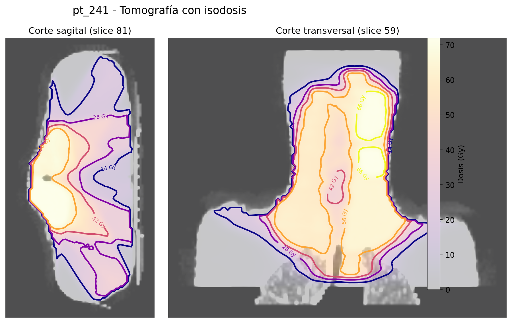

Número de Pacientes : 204Análisis y visualizaciones
Pregunta 1
¿Existe una relación entre la dosis media administrada a un paciente y la dosis máxima recibida durante el tratamiento de radioterapia?
Para responder esta pregunta se utiliza un gráfico de dispersión, ya que permite observar la relación entre dos variables numéricas e identificar posibles patrones o valores atípicos.
Pregunta 2
¿Cómo se distribuye la dosis media entre las distintas estructuras anatómicas?
Para responder esta pregunta se utiliza un gráfico de dispersión donde cada punto representa la dosis media recibida por una estructura anatómica específica en un paciente. Esto permite comparar las dosis administradas entre diferentes estructuras y observar la variabilidad existente entre pacientes.
** Interpretación **
La visualización muestra cómo se distribuye la dosis media entre los pacientes para distintas estructuras anatómicas del dataset OpenKBP. Los volúmenes objetivo (PTV70, PTV63 y PTV56) reciben las dosis más altas, con valores aproximados entre 67–74 Gy para PTV70, 63–71 Gy para PTV63 y 53–65 Gy para PTV56, lo cual es consistente con su función terapéutica en radioterapia. En contraste, los órganos de riesgo presentan dosis menores: Brainstem se sitúa aproximadamente entre 0 y 30 Gy, mientras que SpinalCord se mantiene entre 5 y 30 Gy. Las glándulas parótidas (LeftParotid y RightParotid) muestran mayor variabilidad, con valores entre 20 y 60 Gy, reflejando diferencias anatómicas y de planificación entre pacientes. Estos resultados evidencian cómo la radiación se concentra en los volúmenes tumorales mientras se intenta limitar la exposición en estructuras críticas.
Pregunta 3
¿Cómo se distribuye espacialmente la dosis de radioterapia en distintos cortes tomográficos del paciente?
Esta visualización presenta una exploración espacial de la dosis sobre la anatomía del paciente, mostrando cortes sagital y transversal con curvas de isodosis superpuestas.
C:\Users\psiqg\AppData\Local\Temp\ipykernel_20616\567491621.py:163: UserWarning: This figure includes Axes that are not compatible with tight_layout, so results might be incorrect.
plt.tight_layout()
** Interpretación **
La visualización muestra dos cortes tomográficos del paciente, uno sagital y otro transversal, con curvas de isodosis superpuestas. En ambas vistas se observa que las regiones de mayor dosis se concentran en la zona objetivo del tratamiento, mientras que la intensidad disminuye hacia los tejidos circundantes. Esto permite analizar la distribución espacial de la radiación y verificar que el tratamiento busca maximizar la dosis en el tumor y limitar la exposición de estructuras sanas.
Pregunta 4: ¿Cómo varía la dosis entre pacientes?
Se explora la variabilidad inter-paciente mediante una visualización comparativa.
** Interpretación **
Esto permite evaluar si existen patrones consistentes o diferencias importantes en la planificación.
Pregunta 5: ¿Existe relación entre volumen y dosis?
Se analiza la relación entre el tamaño de una estructura y la dosis media recibida.
** Interpretación **
Este análisis ayuda a identificar si estructuras más grandes o más pequeñas presentan comportamientos distintos en la distribución de dosis.